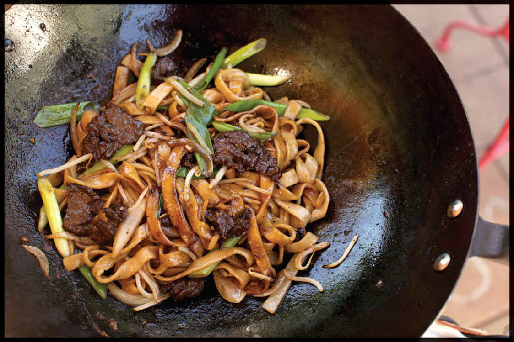

BEEF CHOW FUN ON AN OUTDOOR WOK BURNER
For best results, use freshly made hor fun noodles either from a local shop or homemade (see here). If using refrigerated fresh hor fun noodles or dry noodles, you will need to boil them before use: Bring 3 quarts of water to a boil in your wok. Add the noodles and cook, stirring gently to break them up, until they are tender, about 1 minute (if using dry noodles, this will take a couple minutes; follow the package directions). Drain, toss with a couple teaspoons of oil to keep them separated, then spread out on a large plate or rimmed baking sheet. Allow to air-dry for at least 5 minutes.
INGREDIENTS
For the Beef:
8 ounces (225 g) thinly sliced beef flap meat, skirt steak, hanger steak, or flank steak,
¼ teaspoon (1 g) baking soda
½ teaspoon (1.5 g) kosher salt
1 teaspoon (5 ml) dark soy sauce
1 teaspoon (5 ml) light soy sauce
1 teaspoon (5 ml) Shaoxing wine
1 teaspoon (1 g) cornstarch
For the Sauce:
4 teaspoons (20 ml) light soy sauce or shoyu
2 teaspoons (10 ml) dark soy sauce
1 tablespoon (15 ml) Shaoxing wine
For the Stir-Fry:
½ cup (120 ml) peanut, rice bran, or other neutral oil
12 ounces (340 g) hor fun (chow fun) noodles, preferably freshly made (see Note)
½ small yellow onion (about 3 ounces/90 g), sliced
2 teaspoons (5 g) minced garlic (about 2 medium cloves)
3 scallions, cut into 2-inch segments
3 ounces (90 g/about 1 cup) mung bean sprouts
Kosher salt and freshly ground white pepper
MSG (optional)
This recipe for beef chow fun is written to help you get the most out of a high-powered outdoor wok setup. I recommend a burner with a heat output of at least 65,000 BTU/hour, though 120–130,000 BTU/hour is even better. Work away from any flammable objects, make sure there are no hoses or things that you might trip on, and have all of your supplies ready before you start. For safety, I recommend having a heatproof landing spot where you can place your wok in the middle of cooking to prevent food from burning if you ever lose your place or need to take a quick break to regroup. Your wok burner should be off or on its lowest heat setting while you’re not actively preheating or cooking. I also recommend doing a mental run-through of every step in the process before you begin cooking. It’s fast and furious!
You can premix your sauce for this, but I prefer to keep my soy sauces in small plastic squeeze bottles and my Shaoxing wine in its original bottle with a pour spout fitted over the top, which makes adding all the sauces in succession simple.
DIRECTIONS
1 For the Beef: Place the beef in a medium bowl, cover with cold water, and vigorously agitate it. Drain through a fine-mesh strainer set in the sink and press on the beef with your hands to remove excess water. Return the beef to the bowl, add the baking soda, and vigorously massage the baking soda into the meat, lifting the meat, throwing it down, and squeezing it for 30 seconds to a minute. Add the salt, soy sauces, Shaoxing wine, and cornstarch and roughly work the marinade into the meat for at least 30 seconds. Set aside to marinate for at least 15 minutes and up to overnight.
2 For the Sauce: Combine the soy sauces and wine in a small bowl.
3 BEFORE YOU STIR-FRY, GET YOUR BOWLS READY:
4 For the Stir-Fry: Place a fine-mesh strainer in a heatproof bowl and have it ready by your wok station. Heat the oil in the wok until shimmering. It should register around 350° to 375°F (175° to 190°C) on an instant-read thermometer. With the flame on high, add the beef and cook, stirring, until the pieces are separated and no longer pink, about 45 seconds. Shut off the heat. Strain the beef and oil through the fine-mesh strainer, then transfer the beef to a bowl and set aside. Wipe out the wok.
5 Return the wok to high heat until lightly smoking. Add 1 tablespoon (15 ml) of the drained beef oil to the wok and swirl to coat. Add the noodles and stir-fry, tilting the wok away from you so that the noodles fly directly through the jet of hot air behind the wok and the flames crackle and leap across them, until the noodles are lightly charred in spots, about 45 seconds. (Be careful not to be too rough with the noodles and avoid using the spatula or ladle as much as possible to prevent the noodles from breaking.) Add half of the sauce by swirling it around the edges of the wok and continue to stir-fry until the sauce is dry, about 30 seconds longer. Transfer the noodles to the bowl with the beef and set aside.
6 Return the wok to high heat until smoking. Add another tablespoon (15 ml) of the drained beef oil and swirl to coat. Add the onion, garlic, scallions, and bean sprouts and stir-fry, again tilting the wok away from you so that the flames leap into it, until the vegetables are tender-crisp and charred in spots, about 30 seconds.
7 Immediately return the noodles and beef to the wok and toss to combine. Season with a pinch of salt, white pepper, and MSG (if using). Add the remaining sauce to the wok by pouring it around the edges. Cook, tossing, until the sauce is completely dry and the noodles are starting to sizzle in spots, about 1 minute. Transfer to a serving platter and serve immediately.
